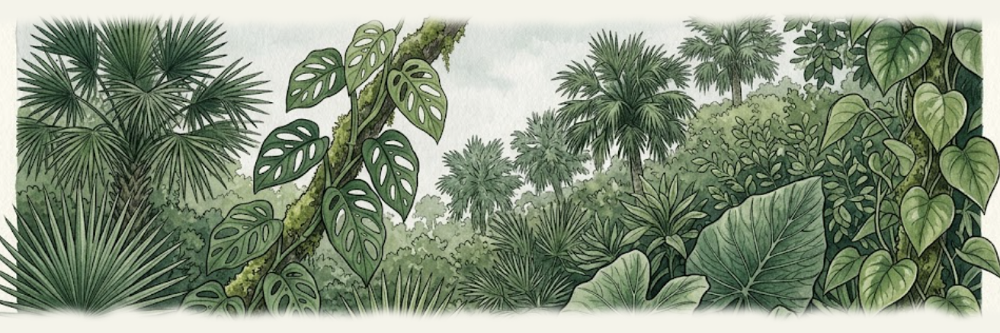

PhD Candidate in Texts and Technology, University of Central Florida — working across feminist technoscience, critical data studies, and technical & professional communication.
This portfolio collects a teaching philosophy, a sample syllabus, a signature assignment, and the courses I'm prepared to teach.